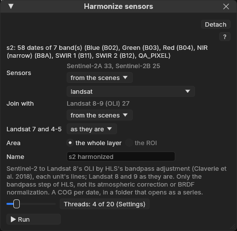
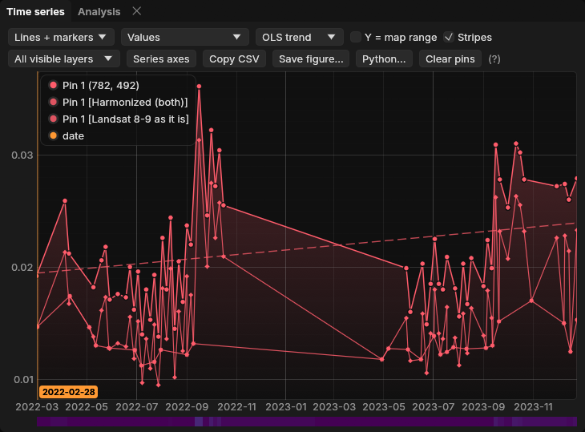
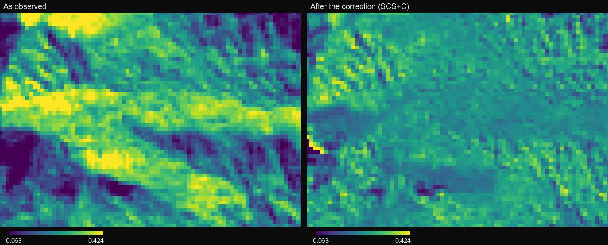
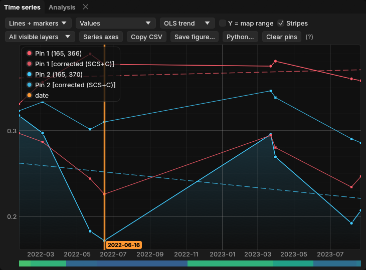
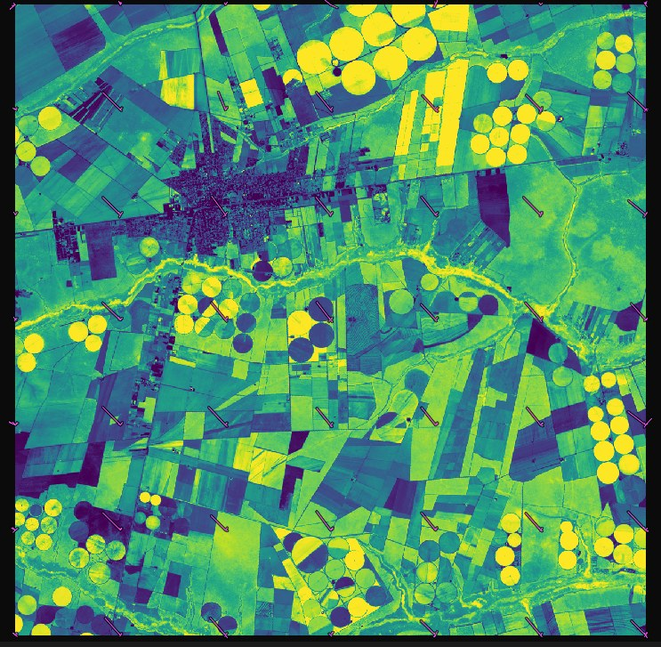

01The idea
Surface reflectance from an archive is not yet a series ready to analyse. A date can still hold haze or a cloud the quality band missed. The same forest looks different under another sun or from the other side of the orbit. A Landsat date and a Sentinel-2 date of one field do not measure the same bands, and one scene can sit a pixel away from its neighbours. The dates come where the sky was clear and not every 16 days, and a radar image is grainy. Each of these makes a change detector or a classifier report something that is in the data and not on the ground. Tools → Data preparation has a tool for each, sixteen in all. This page puts them in the order someone prepares a series, and says what each one does, where it is, what its parameters mean and how to read what it writes.
![The Tools menu open on Data preparation: its submenu lists Smoothing, Tmask (cloud screening), Interpolate (regular grid), Standardize (FORCE), Clear-sky observations (FORCE CSO), Spectral adjustment to Sentinel-2A (FORCE), NBAR (c-factor), Topographic correction (C, SCS+C), Co-register dates (AROSICS), ImproPhe (FORCE), Level 1C to surface reflectance (FORCE) and Radiometric normalization (iMAD invariant pixels), a separator, then Regularize series, Speckle filter, Harmonize sensors and Reproject, resample, clip; the other entries of the Tools menu are on its left.](assets/img/data-preparation/dp-01-menu.png)
| Group | Menu entry | What it fixes |
|---|---|---|
| Level 1 | Level 1C to surface reflectance (FORCE) | Sentinel-2 top-of-atmosphere reflectance taken to surface reflectance, with the cloud, shadow, snow and water flags. |
| Clouds | Tmask (cloud screening) | Clouds and shadows the quality band missed, found from each pixel's own series. |
| Clear-sky observations (FORCE CSO) | How many valid observations each pixel has in each window of months, and the gaps between them. | |
| Cloud detection | Coming: clouds, shadows and snow for a series without a quality band. | |
| Radiometric consistency | NBAR (c-factor) | The sun and view angles of each date taken out of the reflectance. |
| Spectral adjustment to Sentinel-2A (FORCE) | Landsat and MODIS bands taken to Sentinel-2A's, red edge included. | |
| Harmonize sensors | Sentinel-2 taken to Landsat 8's bands, so that a mixed series has no step where the sensor changes. | |
| Topographic correction (C, SCS+C) | The illumination of the relief. | |
| Radiometric normalization (iMAD invariant pixels) | The dates put on the scale of a reference date, by the pixels that did not change. | |
| Geometry | Co-register dates (AROSICS) | Dates a pixel or less away from their reference. |
| Reproject, resample, clip | Another CRS, pixel size or grid, or only an area. | |
| Time | Interpolate (regular grid) | Each pixel's series on a regular grid of dates, with the gaps filled by a model. |
| Regularize series | One composite per period of a fixed step. | |
| Smoothing | The noise of a series, drawn on the chart. | |
| Standardize (FORCE) | Every series on one scale: minus its mean, or also over its standard deviation. | |
| Radar | Speckle filter | The grain of a radar image. |
| Resolution | ImproPhe (FORCE) | A coarse series sharpened to the pixels of a finer one. |
The menu does not follow this order: it lists the Zeit tools first (Smoothing, Tmask, Interpolate, Standardize, Clear-sky observations, the spectral adjustment, NBAR, the topographic correction, the co-registration, ImproPhe, Level 1C, the radiometric normalization), then a separator, then Janus' own four (Regularize series, Speckle filter, Harmonize sensors, Reproject, resample, clip). The order of use for an optical series is the one of the table: bring the scenes to surface reflectance, take out the clouds, make the dates comparable in light and band, put them on one grid, and last make the time regular. Not every series needs every step. A Sentinel-2 L2A or a Landsat Collection 2 series from a catalogue is already at surface reflectance and has a quality band, and often needs only a few of them.
How a Zeit tool's window works. The tools of Zeit share one window, with the same parts:
- Bands, for the tools that read several: which band of each date plays which role (
green,nir,swir1...). The quality band is set in the Display panel. - Parameters, with the defaults of the tables below and a Reset to defaults button. The ? button at the top opens this page at the tool's section where the tool has one.
- On the chart, for the tools that have a pixel mode: the tool is fitted on the series of the cursor, the pins and the ROI and drawn over them.
- Run on the raster: the scope (Whole image, Visible area or ROI), the output folder, the threads, Run, and Preview and Auto-preview on the ROI or the centre of the view before the whole scene.
A run is a task (Tools → Tasks) in a folder of its own, named after the layer, the tool and the time. It holds job.json, job.log, provenance.json, rerun.py (the Zeit script of the run, the same one Copy Python gives) and the maps, as tiled, compressed GeoTIFFs named after the tool and the output, with one band for each date where the output is a series. The results open as new layers. Copy Python leaves out the arguments that are Zeit's own defaults and adds nodata=None and n_jobs=1, which make the call what Janus ran; the snippets below write the arguments that teach and leave those two out.
Two chains in the Tools menu run several of these steps in one task: Analysis-ready data (FORCE) runs NBAR, the spectral adjustment, Tasseled Cap and ImproPhe, and Time series analysis (FORCE) the clear-sky observations, the interpolation, the standardization, the metrics and the trends (Analysis-ready data and Time series analysis in the usage reference). Building a series from loose files and saving it are in Series.
02From Level 1 to surface reflectance
Level 1C to surface reflectance (FORCE)
A Sentinel-2 Level 1C product is reflectance at the top of the atmosphere: what the sensor saw, with the air still in it. On a hazy day the blue of a forest is higher than on a clear one, the water vapour changes the SWIR, and the light scattered from a bright field next door lifts the pixels beside it. Two such scenes cannot be compared band by band, and the Level 1C has no flags for the clouds, the shadows and the snow. This tool takes a product to surface reflectance and writes the flags with it, so that what follows (the series of a tile, a change detector) reads the land and not the air.
How it works. It is the Level 2 processor of FORCE (force-l2ps, Frantz 2019; FORCE is by David Frantz) as run in the Zeit core, zeit.level2, one scene at a time. The top-of-atmosphere reflectance is corrected for the gases and the water vapour, for the aerosols (the optical depth is estimated from the dark targets of the scene: dense vegetation, water and shadow), for the adjacency effect, for the topography (with a digital elevation model) and for the BRDF (the reflectance brought to nadir view and the scene's own sun, with the c-factor of the NBAR tool). The cloud, shadow, snow and water flags come from Zeit's port of the Fmask (version 4.7 of the code; Qiu, Zhu and He 2019 describe Fmask 4.0). Everything is written on the scene's 10 m grid.
What is and what is not FORCE's. Given FORCE's own cloud flags, sun, geography and BRDF factor, every product of zeit.level2 equals that of force-l2ps in every pixel, in the three runs Zeit compared. The tool does not take those from FORCE: the clouds are Zeit's Fmask, the sun is Zeit's own and the BRDF factor is the c-factor of NBAR, so with them it differs a little. On tile 23LKC (2023), Zeit's Fmask marks 19.93 % of the pixels as cloud or shadow against 19.70 % in FORCE's and agrees with it in 98.12 % of them; the shadow is what diverges. The details and the comparison with the Level 2A of ESA are in Zeit's tutorial Sentinel-2 Level 1C to Surface Reflectance and its page of comparisons with the original implementations. It is for Sentinel-2 Level 1C only.
Where: Tools → Data preparation → Level 1C to surface reflectance (FORCE). It needs no open series: its input is a folder, either a .SAFE product (JPEG 2000 or GeoTIFF bands) or a folder that holds .SAFE folders. Each product is processed in turn, in the order of its name and never two at once. It needs a digital elevation model (elevations in metres, any grid and CRS, put on the scene's 10 m grid by bilinear resampling) because the topographic correction is on by default: with it on and no DEM the run is refused and says so. Switch the topographic correction off, or choose a DEM, as the Copernicus GLO-30 clipped to the tile. There is no window, scope or preview: a scene is processed whole.
A scene needs about 13 GiB of memory (17.5 GiB with the merge of the 20 m bands), measured on a whole 110 km tile, and the window says so. A whole tile takes about 150 s a scene on 8 threads (the figure the app assumes, measured on tile 23LKC), and the run never uses more than 8 threads. Close what you can before a run. It cannot be stopped inside a scene, only between scenes, and it runs in the background: see Tools → Tasks. For Zeit's own measurement, the whole chain with its Fmask took 141 to 147 s on 8 threads against 197 s for force-l2ps, on a machine that was not dedicated; these are not clean benchmarks.
Parameters
| Parameter | Default | Meaning |
|---|---|---|
input | none | A .SAFE folder of a Level 1C product, or a folder that holds .SAFE folders. |
dem | none | Elevations in metres, any grid and CRS (the Copernicus GLO-30, SRTM...). Needed by the topographic correction, and used by the Fmask. |
merge | none | Merge the 20 m bands to 10 m: none (the 20 m bands as they are, on the 10 m grid), regression (FORCE's RESOLUTION_MERGE=REGRESSION) or improphe (RESOLUTION_MERGE=IMPROPHE). It predicts the six 20 m bands (red edge 1 to 3, NIR, SWIR1 and SWIR2) from the 10 m bands, on the top-of-atmosphere reflectance and before the correction, as force-l2ps does. It needs about a third more memory. |
brdf | on | Normalize the reflectance to nadir view and the scene's own sun (FORCE's DO_BRDF). |
topography | on | Correct the illumination of the relief (DO_TOPO). It needs the DEM. |
aod | on | Estimate the aerosol optical depth from the dark targets of the scene (DO_AOD). Off: a fixed fallback spectrum. |
adjacency | on | Correct the light scattered from the neighbouring pixels (DO_ENV). |
multiple_scattering | on | Include the multiple scattering of the atmosphere in the radiative transfer (MULTI_SCATTERING). |
erase_cloud | off | Write no data where the Fmask finds opaque cloud (ERASE_CLOUDS). |
fmask | on | Run Zeit's Fmask for the cloud, shadow, snow and water flags. Off: no cloud detection, and the QAI has no such flags. |
fmask_compat | off | Zeit's compatibility switch of the Fmask: on, it reproduces three oddities of the original Fmask 4.7 code; off, it corrects them. |
gswo | none | A raster of the water occurrence (JRC's Global Surface Water Occurrence, in percent), used by the Fmask for the water flags. None: the Fmask's own. |
Outputs
- For each scene, a subfolder of the output folder named after the product, with
boa.tif(the bottom-of-atmosphere reflectance: 10 bands, blue, green, red, red edge 1 to 3, broad NIR (B08), NIR (B8A), SWIR1 and SWIR2, times 10000, as int16, with -9999 where there is no data),qai.tif(the quality information),dst.tif(the distance to the nearest cloud, shadow or snow, in metres, 0 on them),vzn.tif(the view zenith, in degrees times 100),hot.tif(the haze optimized transform),aod.tif(the aerosol optical depth of the green band, times 1000) andwvp.tif(the water vapour, in cm times 1000). attrs.json: the scene's date, sensor, the aerosol optical depth and the water vapour found, the number of dark targets, the summary of the Fmask, and how the correction went.- Two layers for each scene open in Janus, surface reflectance and quality (QAI); the quality layer is hidden at first.
How to read them. Start with the quality layer. Its value packs several flags in 16 bits, from bit 0 (the least significant):
| Bits | Flag | Values |
|---|---|---|
| 0 | No data (outside the scene) | 1: off |
| 1–2 | Cloud state | 0 none, 1 less confident (the buffer), 2 confident and opaque, 3 cirrus |
| 3 | Cloud shadow | 1: shadow |
| 4 | Snow | 1: snow |
| 5 | Water | 1: water |
| 6–7 | Aerosol | 0 good, 1 interpolated, 2 high optical depth, 3 the scene's fill value |
| 8 | Sub-zero reflectance | the surface reflectance was below 0 in a band |
| 9 | Saturation | the surface reflectance was above 1 in a band |
| 10 | Low sun | the sun's zenith is above 75° |
| 11–12 | Illumination | 0 good, 1 moderate, 2 poor, 3 deep shadow |
| 13 | Slope | the slope is above 2° |
| 14 | Water vapour fill | the water vapour of the pixel is the scene's average |
The cloud buffer of the QAI is 300 m, as in FORCE, and Zeit's Fmask never marks cirrus. The Display panel has no rule for these bits, so a mask is made in Python (below). Then open attrs.json: a very high aerosol optical depth, few dark targets (n_targets) or a scene mostly under cloud are the cases where the correction is worth a second look. dst.tif is 32767 in the whole image when the scene has no cloud target at all. Compare a bright, stable surface on a clear scene and a hazy one: after the correction their values should be close.
In Python
Copy Python writes one call for each scene, with only the parameters that are not Zeit's defaults, and the save that writes the products as the tool does. It needs pip install "zeit-cdts>=3.6.0". A scene in Python takes about 22 GiB of memory (29 GiB with the merge) with Zeit's own accounting, more than in the app, and the scenes run one at a time.
import zeit
l2 = zeit.level2(
"D:/data/S2B_MSIL1C_20230728T132239_N0509_R038_T23LKC_20230728T150149.SAFE",
dem="D:/data/dem.tif", merge="improphe",
)
l2.zeit.save("D:/results/S2B_MSIL1C_20230728T132239_N0509_R038_T23LKC_20230728T150149")
# a clear-sky mask from the QAI: no data, any cloud state, shadow and snow left out
q = l2.qai
clear = ~(((q & 1) != 0) | (((q >> 1) & 3) != 0) | (((q >> 3) & 1) != 0) | (((q >> 4) & 1) != 0))
red = l2.boa.sel(band="RED").where(clear) / 1000003Clouds
Tmask (cloud screening)
A quality band marks the clouds a scene's own processing found: the thick ones, mostly. The thin cloud, the haze and the edge of a shadow often stay. On the chart of a pasture in a humid area they are the dates whose green is too bright or whose SWIR is too dark for the season, and a change detector reads each of them as a break. Tmask looks at the same pixel through time instead of at the scene: an observation that does not fit that pixel's own seasonal curve, in the direction a cloud or a shadow pushes it, is flagged.
How it works. Tmask is that of Zhu and Woodcock (2014), as implemented in Zeit. For each pixel a robust fit (iteratively reweighted least squares with bisquare weights, as the MATLAB robustfit that CCDC's own Tmask uses) of an offset, a trend and one harmonic of the year, a0 + c1 t + a1 cos(ωt) + b1 sin(ωt), is made to the green and the SWIR1 series. An observation whose green rises above the fit by more than 0.04 (a cloud) or whose SWIR1 falls below it by more than 0.04 (a shadow), in reflectance, is flagged. The observations the quality band refuses are left out before the fit, and a pixel with five valid observations or fewer is not screened. The model spans the whole series: after a sudden lasting change, as a clearing, the observations that follow can look like clouds to it. Check such pixels on the chart.
Where: Tools → Data preparation → Tmask (cloud screening). The series needs one file per date with the green and swir1 bands mapped in the window, real dates, at least 6 dates and at least 2 observations a year. It works on the chart (the flagged observations are marked on each pin's series, and the Statistics table counts the valid and the flagged observations) and on the raster (Whole image, Visible area or ROI). The ? button of its window opens the methods list.
Parameters
| Parameter | Default | Meaning |
|---|---|---|
units | auto | The reflectance units, because the thresholds are in reflectance: auto (a median of 2 or less is reflectance 0 to 1; a median of 6500 or more is Landsat Collection 2 Level-2 digital numbers, taken to reflectance with × 0.0000275 − 0.2; otherwise already × 10000), x10000, unit (0 to 1) or landsat_c2. Janus applies the files' scale and offset metadata first, when present. |
write_series | on | Raster runs: also write the series shown without the flagged observations, opened as a new layer. |
Outputs
- Observations flagged (
tmask_n_flagged.tif): the number of flagged observations of each pixel, in the Plasma colours. Share flagged (tmask_flagged_share.tif): the same as a percent of the pixel's valid observations. - Screened series (
tmask_series.tif): the series shown, one band for each date, with the flagged observations empty. It opens as a new layer and every tool that follows reads it without them. - On the chart: a marker on each flagged observation, named Tmask: cloud or shadow.
How to read them. Put pins on a few places and look at the markers: they should fall on the dates where the series jumps against its neighbours, a green or NIR spike or a dark SWIR. The share map follows the weather: high in the wet season of the tropics, low where the sky is clear. A pixel with a share far above its neighbours of the same cover is suspicious, since a real change that lasts (a clearing) makes its later dates look like clouds to a model that spans the whole series. Pixels with five valid observations or fewer come out unflagged; on the chart the Statistics say so.
In Python
Copy Python reads the series as Janus shows it (the bands by role, the quality mask) and makes the same call. It needs pip install "zeit-cdts>=3.2".
import zeit
cube = zeit.load_raster("series_folder", masked=True) # (time, band, y, x), bands named green, swir1
clear = zeit.tmask(cube, green="green", swir="swir1", scale=10000.0) # True: clear; False: cloud, shadow or no observation
screened = cube.where(clear) # the flagged observations as NaN
valid = cube.sel(band=["green", "swir1"]).notnull().all("band")
n_flagged = (valid & ~clear).sum("time") # the first mapClear-sky observations (FORCE CSO)
Before trusting a series, ask how much of it there is. In Rondônia a Sentinel-2 pixel has few clear dates from October to May, and a break date found there is a guess. This tool counts, for each pixel and each window of months, the valid observations, and measures the gaps between them. A map of the longest gap tells where a seasonal curve cannot follow the year, and a map of the count says where a monthly composite would be empty.
How it works. It is FORCE's clear-sky observations (the CSO of its time series analysis, Frantz 2019), as zeit.clear_observations. The windows begin on the first day of the month of the first date and go on, months months each, until the one that holds the last date, which is kept whole (FORCE leaves out a last window that starts in the month of its range's end; here every window is made). An observation is valid where its value is not missing: the clouds, the quality band and NoData are missing. In each window the gaps, in days, are those from the start of the window to the first valid observation, between consecutive valid observations, and from the last one to the end of the window. Observations on the same day make no gap, and a window without a valid observation has a count of 0 and one gap as long as the window. Unlike FORCE, which divides some of the statistics by the number of observations instead of the number of gaps, every statistic but the count here is that of the same gaps.
Where: Tools → Data preparation → Clear-sky observations (FORCE CSO). Any series with real dates in order; set the quality band in the Display panel so that the clouds are missing. It runs on the chart (the windows of a pin are listed in the Statistics) and on the raster.
Parameters
| Parameter | Default | Meaning |
|---|---|---|
months | 1 | The length of each window, in calendar months (1 to 12), from the first day of the first date's month. |
statistics | count, mean, max | What to write: count (the clear observations of the window) and, of the gaps in days between them, min, p05, p10, p25, median, p75, p90, p95, max (the longest gap), range, iqr, mean (the mean revisit time), std, skew and kurtosis (the excess). |
Outputs. One new layer for each chosen statistic (clear_observations_o_count.tif, clear_observations_o_max.tif...) with one band for each window, labelled with its first month (2020-03), so that it opens as a monthly series.
How to read them. Start with the count of the wettest month and the longest gap (max) of the year. A pixel with a count of 0 has a gap as long as the window, and a month whose longest gap is the whole month has nothing in it. A tool that wants a value every month (a monthly composite, a regular series for BFAST) has none to use where the longest gap is the length of the step. The mean gap is the revisit time the pixel really has, which is longer than the satellite's wherever clouds are.
In Python
import zeit
series = zeit.load_raster("series.tif", masked=True) # (time, y, x), clouds as NaN
cso = zeit.clear_observations(series, months=1, metrics=["count", "mean", "max"]) # (metric, window, y, x)
cso.sel(metric="max").isel(window=0) # the longest gap of the first monthCloud detection
Coming: clouds, shadows and snow for a series without a quality band, first Fmask for Sentinel-2 Level 1C, then OmniCloudMask. Until then the Level 1C tool already writes the Fmask flags with the surface reflectance it makes, and Tmask finds what a quality band leaves in a series that has one.
04Radiometric consistency
Five tools make the dates of a series comparable in the value they give to the same ground. They fix different things and are not alternatives. NBAR takes the sun and the view of each date out. The spectral adjustment and Harmonize sensors take the bands of one sensor to those of another, in opposite directions. The topographic correction takes the relief's illumination out, and the radiometric normalization puts the dates on the scale of one of them, whatever the cause of the difference.
NBAR (c-factor)
The reflectance of a surface depends on where the sun and the sensor are. A Landsat scene is seen from nadir at its centre and from a few degrees to the side at its edges, a field in the overlap of two paths is seen from two sides, and the sun is higher in March than in July. The forest has not changed, but its numbers have, and a change detector looking for a small change finds the geometry. The nadir BRDF-adjusted reflectance (NBAR) puts every date as it would look from nadir with the sun at one zenith.
How it works. It is the c-factor method of Roy et al. (2016a, 2017), as in FORCE and in HLS, as zeit.nbar: each band is multiplied by the ratio c of the MODIS Ross-Thick / Li-Sparse-Reciprocal model (three fixed parameters for each band) at nadir view and a normalized solar zenith, over the model at the pixel's own sun and view angles. The normalized zenith is, by default, the mean of the observed solar zenith of each date over the pixels of the run's window whose four angles are valid (Roy et al. 2016a advise against one far from the observed ones). The view is always nadir. The model is that of MODIS for snow-free land: not for snow, and not for HLS, which is already NBAR. The factor is a ratio, so it needs reflectance (any scale), not Landsat Collection 2's digital numbers with their offset. The quality band is not applied.
Where: Tools → Data preparation → NBAR (c-factor). Map the bands to normalize (any of coastal, blue, green, red, rededge1 to rededge3, nir (Sentinel-2's B08), nir08 (B8A, OLI's band 5), swir1, swir2; at least one, or the run stops and says so) and, unless the angles come from Sentinel-2's metadata, the four angle bands of each date: sza, saa, vza, vaa (solar and view zenith and azimuth), of the same series as the reflectance. Landsat Collection 2's SZA, SAA, VZA and VAA bands are the Level-1 angle bands, and HLS has them too. The series needs real dates. It runs on the chart (there is no scene there, so each date is brought to nadir at the pixel's own sun) and on the raster.
![The NBAR window, scrolled past its description: the Bands section with blue, green, red, nir (4: NIR B08), nir08 (5: NIR narrow B8A), swir1 and swir2 mapped to the bands of a Sentinel-2 series and the four angle roles, the coastal and the red edge roles not used; the line Quality: SCL; the parameters Sun and view angles from Sentinel-2 granule metadata (MTD_TL.xml), Sentinel-2 view band B06, Normalized solar zenith A fixed angle, Fixed solar zenith 30.0 degrees, Angle bands unit Degrees and Also write the c-factors checked; then On the chart and Run on the raster with the estimate of the time, ~3 s for 1.000 M px.](assets/img/data-preparation/dp-08-nbar-window.png)
MTD_TL.xml, so the four angle roles stay unused and only the bands to normalize are mapped (the broad NIR, B08, as nir and the narrow one, B8A, as nir08). The picture is scrolled to start at the bands; the normalized zenith is fixed at 30° and the c-factors are written.Sentinel-2 from the tiles' metadata. Sentinel-2 Level 2A files have no angle bands, but each tile's MTD_TL.xml has the sun's and the view angles on a 5 km grid. Set Sun and view angles from to Sentinel-2 granule metadata and map only the bands to normalize: the angles of every pixel are computed as zeit.sentinel2_angles does, the view angles of one band (B06 as HLS, the choice view_band) for every band, interpolated bilinearly to the pixels (Roy et al. 2017). The metadata is found from the STAC items the series was made from (a series built from a search records their addresses) or from the Sentinel-2 product the file is in (X.SAFE/GRANULE/<granule>/MTD_TL.xml, or an MTD_TL.xml beside the file). A date without metadata stops the run and is named.
Parameters
| Parameter | Default | Meaning |
|---|---|---|
angles | bands | Where the angles come from: bands (the four angle bands of each date) or sentinel2 (the granule metadata). With the metadata the angle bands and angle_scale are not needed. |
view_band | B06 | With the metadata: the Sentinel-2 band whose view zenith and azimuth every band takes. B06 is HLS's choice (User Guide, Sec. 6.3): one view geometry for all bands. |
sza | scene | The solar zenith the reflectance is brought to: scene (the mean of each date, over the pixels of the run's window with valid angles: change the window and the means change) or fixed. |
sza_fixed | 30 | The zenith, in degrees (0 to 89.9), when sza is fixed. |
angle_scale | degrees | With the angle bands: their unit, degrees or hundredths (Landsat Collection 2 and HLS store 3025 for 30.25°). Hundredths read as degrees make every pixel missing; degrees read as hundredths give angles near zero and a wrong result without a warning. |
cfactor | off | Also write the c-factor (NBAR over the observed reflectance, not clipped) of each band, to inspect the correction. |
Outputs. One series for each mapped band, NBAR blue, NBAR nir..., in the units of the input, each opened as a new layer, and with cfactor on, one series of c-factors for each band. A pixel with a zenith outside 0 to 90° or an angle without a value is missing.
How to read them. Write the c-factors the first time. In a Landsat's field of view they stay within 0.95 to 1.05 (Zeit's documentation): a correction of a few percent. A c far outside that, or constant, says the angles are wrong, usually their unit. What it should be depends on the zenith it is brought to: on the Sentinel-2 window of the figure, where the sun’s zenith runs from 21° to 52° over the 36 dates and the zenith is fixed at 30°, the NIR’s c is 0.98 to 1.09; with the default (each date’s own scene mean) it is 1.00 to 1.01 over 98 % of the window, because one date has one sun and the view hardly changes in 10 km, and the series is hardly touched. Then compare a stable pixel before and after on the chart: its values should follow the sun and the view of each date less. NBAR does not remove the atmosphere, the shadows or the difference between sensors; for the last, see the next two tools.
![Two charts side by side. Left: the NIR of one pixel of flat forest at 10 m over the 36 Sentinel-2 dates of 2022 and 2023, as observed (circles) and after NBAR to a solar zenith of 30 degrees (diamonds): both follow the same seasons between about 0.26 and 0.40, the NBAR line above the other in the winter months and below it in November and December. Right: the c-factor of the NIR at the same pixel, rising from 1.00 in January 2022 to 1.09 in June and July, back to 0.98 in November 2023 and 0.99 in December.](assets/img/data-preparation/dp-09-nbar-chart.png)
In Python
Copy Python writes the reading of the bands and of the angles and the call. It needs pip install "zeit-cdts>=3.2". With the Sentinel-2 metadata the angles come from zeit.sentinel2_angles instead (sources are the metadata's addresses, one for each date of the cube; Zeit signs Planetary Computer's if planetary_computer is installed).
import xarray as xr
import zeit
cube = zeit.load_raster("series_folder", masked=True) # (time, band, y, x): the reflectance bands and sza, saa, vza, vaa
refl = cube.sel(band=["blue", "nir", "swir1"])
angles = xr.Dataset({a.upper(): cube.sel(band=a, drop=True) * 0.01 for a in ["sza", "saa", "vza", "vaa"]}) # hundredths to degrees
nbar, c = zeit.nbar(refl, angles, bands={"blue": "blue", "nir": "nir", "swir1": "swir1"}, return_cfactor=True)
# Sentinel-2: angles = zeit.sentinel2_angles(sources, like=refl, view_band="B06")Spectral adjustment to Sentinel-2A (FORCE)
Landsat's bands are not Sentinel-2's, and Landsat has no red edge. A red-edge index, or a classifier trained on Sentinel-2, cannot be run on a Landsat or MODIS series as it is. This tool takes Landsat 4 to 9 and MODIS surface reflectance onto the spectral response of Sentinel-2A, predicting the red edge bands and the broad NIR that those sensors do not have.
How it works. It is FORCE's spectral adjustment (Scheffler, Frantz and Segl 2020), as zeit.spectral_adjust. Each sensor (Landsat 4, 5, 7, 8, 9, MODIS Terra and Aqua) has 50 clusters of spectra and a global one, each with a linear regression of the ten Sentinel-2A bands on its own six (blue, green, red, NIR, SWIR1, SWIR2). For each pixel the spectral angle to the centre of every cluster gives a weight, and the prediction is the average of the regressions of the closest clusters, weighted. All ten bands are rewritten, not only the new ones, because the blue of Landsat 8 is not Sentinel-2A's. This is not Harmonize sensors, which takes Sentinel-2 towards Landsat 8 with a line a band and predicts no new band.
Where: Tools → Data preparation → Spectral adjustment to Sentinel-2A (FORCE). A series with one file a date and the six reflective bands mapped to blue, green, red, nir, swir1 and swir2, with real dates. For MODIS, map SWIR1 and SWIR2 to bands 6 and 7. The sensor of each date is read from the scene it came from (its STAC platform, else its file name: LC08_..., LT05_..., MOD09...); a date whose sensor is not found is an error that names it, and so is a Sentinel-2 date, which the tool refuses. The observations the quality band keeps are the ones passed. It runs on the chart and on the raster.
![The Spectral adjustment to Sentinel-2A (FORCE) window: its description, the Bands section with 1 Blue, 2 Green, 3 Red, 4 NIR, 5 SWIR1 and 6 SWIR2 mapped to blue, green, red, nir, swir1 and swir2, the line Quality: QA_PIXEL; the parameters Sensor Each date’s own (from its scene), Reflectance units Automatic (from the values) and FORCE’s first cluster search unchecked; On the chart with the fit of the cursor, pins and ROI series checked; Run on the raster with Whole image, the estimate ~7 s for 1.440 M px, Run and Preview.](assets/img/data-preparation/dp-10-spectral-window.png)
Parameters
| Parameter | Default | Meaning |
|---|---|---|
sensor | auto | auto (each date's own, as above) or one for every date: LND04, LND05, LND07, LND08, LND09, MOD01 (Terra) or MOD02 (Aqua). |
units | auto | The bands are taken as reflectance × 10000, FORCE's integers, and the result is in it. auto: a median of 2 or less is reflectance 0 to 1, a median of 6500 or more is Landsat Collection 2 digital numbers (× 0.0000275 − 0.2), otherwise already × 10000. Janus applies the files' scale and offset first, when present. |
force_search | off | FORCE's first search for the closest cluster skips cluster 9 where it means to leave out the global cluster, and lets the global cluster be the first pick. On: the search as FORCE has it, so that the values cut to integers are FORCE's in every pixel. Off: the search as the paper means it, which differs from FORCE's integers by more than 1 in 1.6 to 2.3 % of the observations of the synthetic mixtures Zeit tried. |
Outputs. Ten series, one for each band of Sentinel-2A: blue, green, red, red edge 1 (B5), red edge 2 (B6), red edge 3 (B7), broad NIR (B8), NIR (B8A), SWIR1 (B11) and SWIR2 (B12), in reflectance × 10000, each opened as a new layer. A pixel with a missing band is missing in all ten.
How to read them. All ten bands are rewritten, so even the blue differs from the original, and the three red edge bands are predictions from the six bands Landsat has: they carry no information the six did not have, they only put it where an index of Sentinel-2 expects it. Compare the adjusted NIR (B8A) and red edge with a Sentinel-2 series of the same place on dates close in time. In the FORCE chain Analysis-ready data (FORCE) the adjustment comes after NBAR.
In Python
Copy Python passes the dates' sensors it found and the observations the quality band keeps. It needs pip install "zeit-cdts>=3.2".
import zeit
cube = zeit.load_raster("series_folder", masked=True) # (time, band, y, x), bands named blue ... swir2
adjusted = zeit.spectral_adjust(
cube, sensor=["LND08", "LND09", "LND08"], # one for each date, as Janus found them
bands={"blue": "blue", "green": "green", "red": "red", "nir": "nir", "swir1": "swir1", "swir2": "swir2"},
scale=10000.0,
)
adjusted.band.values # blue green red rededge1 rededge2 rededge3 nir nir08 swir16 swir22Harmonize sensors
The bands of Sentinel-2's MSI are not those of Landsat 8's OLI. A series that joins the two has a step wherever the sensor changes, and CCDC or BFAST read the step as a break. This tool takes the Sentinel-2 dates to the bands of Landsat 8, so that the two sensors form one series.
How it works. It is the bandpass adjustment of HLS (the Harmonized Landsat Sentinel-2 product; Claverie et al. 2018), as zeit.bandpass_adjust: a line for each band and each Sentinel-2 unit (A, B, C) that takes MSI's reflectance to OLI's. OLI is the reference, as in HLS: Landsat 8 and 9 stay as they are. Landsat 7 (ETM+) and Landsat 4 and 5 (TM) are taken to OLI only when asked, with the reduced major axis or the least squares lines of Roy et al. (2016b, table 2); those were fitted on pre-collection data and Collection 2 surface reflectance is generally used across sensors without them, so the default leaves them as they are. This is only the bandpass step of HLS: not its atmospheric correction, its cloud mask or its BRDF normalization (NBAR comes before the bandpass in HLS). It does not align the dates either: for that, co-register them.
Where: Tools → Data preparation → Harmonize sensors.... The active series needs dates and a sensor for each: read from the scene (the STAC item a series built from a search records, else the file name), listed in the window as, say, Sentinel-2A 12, Landsat 8-9 (OLI) 30, or chosen for all dates. The bands that HLS adjusts must be named blue, green, red, nir, swir1 and swir2; for Sentinel-2 the NIR must be B8A (search with B8A): HLS has no line for the broad B08, which stays as it is, and the window says so. An HLS series is refused, since its Sentinel-2 dates are already adjusted. Join with takes another open series on the same grid (a Landsat search and a Sentinel-2 one, say) and joins them in time; one on another grid is listed as such and cannot be picked until it is reprojected onto this one's grid (Reproject, resample, clip, to a layer's grid).


Settings
| Setting | Default | Meaning |
|---|---|---|
| Sensors | from the scenes | Each date's sensor from its STAC item or file name, or one chosen for every date: Sentinel-2A, 2B, 2C, Sentinel-2 (unit unknown, adjusted as 2A), Landsat 8-9 (OLI), Landsat 7 (ETM+), Landsat 4-5 (TM). Reading them opens every file. |
| Join with | nothing (this series alone) | Another open series with dates, on this one's grid. Both are adjusted and joined in time, with the reflectance bands they share named by role, in the units of the first. |
| Landsat 7 and 4-5 | as they are | As they are, to OLI, Roy et al. 2016 (RMA) or to OLI, Roy et al. 2016 (OLS). |
| Area | the whole layer | The whole layer or the ROI. |
| Name | <layer> harmonized | The name of the new series and of the files. |
Outputs. A COG for each date in a folder of its own (results\harmonize, under the name and the time), which opens as a new series. For one series, every band of every date: those with a line are adjusted and the others (red edge, B08, the quality band) are copied, and the series is shown as the original was (an index stays an index). Joined, the bands are the reflectance bands the two series share, by role. job.log notes what was left as it was, and why.
How to read them. Put a pin on a stable cover (a pasture that is always green, a lake, a bare surface) and show the original and the harmonized series on the chart (All visible layers). Around the dates where the sensor changes, the harmonized series should have a smaller step. It is a small correction, mostly in the blue: on 23 pairs of dates up to 3 days apart the mean difference between Sentinel-2 and Landsat fell from 0.0104 to 0.0051 in the blue and by 5 to 24 % in the other bands. What the bandpass leaves is what it does not touch: the atmosphere, which differs between the Sen2Cor of Level 2A and the LaSRC of Landsat, the view geometry (NBAR), the shadows of the relief and a misregistration.


In Python
Janus writes no script for this tool (Copy Python and the history have nothing for it). The call is Zeit's zeit.bandpass_adjust, with the signature below; this snippet is written by hand from it, not by Janus.
import zeit
s2 = zeit.load_raster("sentinel2_folder", masked=True) # bands named blue, green, red, nir08 (B8A), swir16, swir22 ...
landsat = zeit.load_raster("landsat_folder", masked=True) # on the same grid
mixed = zeit.bandpass_adjust([s2, landsat], etm=None) # one series sorted by time; etm="rma" or "ols" for Landsat 7 and 4-5
zeit.ccdc(mixed) # no break where the sensor changesTopographic correction (C, SCS+C)
In rough terrain the same cover does not give the same reflectance everywhere. A slope that faces the sun receives more light than the flat ground, and a slope that faces away receives less, so a forest looks bright on one side of a ridge and dark on the other, and a classifier or a change detector reads the shadow of the relief as a difference in the land. The correction here estimates, for each band of each date, how much of the reflectance follows the illumination, and divides it out. It is the one a user of Landsat Collection 2 reflectance needs when the area has relief and the dates differ in sun, as dates of different seasons do. Sentinel-2 Level 2A from ESA is another case: Sen2Cor already corrects the terrain with an elevation model, so on the guide's mountains the regression of most dates did not rise with the illumination and the tool left the bands as they were; correct it only where you know the product was not.
How it works. The slope and aspect of an elevation model (Horn 1981) and the sun of the date (its zenith sz and azimuth) give each pixel's illumination, the cosine of the angle between the sun and the surface's normal: cos i = cos sz cos s + sin sz sin s cos(saz − a), with s the slope and a the aspect. For each band of each date the reflectance is regressed on it, ρ = b + m cos i, and c = b / m. The two corrections are then:
- C-correction (Teillet, Guindon and Goodenough 1982): ρ (cos sz + c) / (cos i + c).
- SCS+C (Soenen, Peddle and Coburn 2005), the default: ρ (cos s cos sz + c) / (cos i + c). It keeps the sun-canopy-sensor geometry, in which the trees stand vertically on a slope, and so over-corrects less in forests on steep ground.
Zeit's zeit.topographic_correction does the arithmetic; Janus finds the elevation model and each date's sun, makes the sample the regression runs on, and writes the files. The result is empirical and Lambertian: it assumes that the surface reflects equally in all directions and that the same cover grows on every slope. It does not model the light scattered by the sky or by the terrain around.
Where: Tools → Data preparation → Topographic correction (C, SCS+C). The series needs every band of a date in one file (surface reflectance, with the bands named blue to SWIR2), a projected CRS in metres (a series in degrees is refused: reproject it to the UTM zone first) and the dates. Single-band series, such as an NDVI, cannot be corrected: the correction is for reflectance. A quality band can also take the very pixels the correction needs out of its sample: the scene classification (SCL) of Sentinel-2 marks many slopes in the shade of the relief as cloud shadow, so over steep ground look at n in topo_c.csv, or use a quality band that does not. It runs on the whole window (the image, the ROI or the visible area) and not on a pin, because the regression needs the whole scene. The ? button of its window opens this page.
![The Topographic correction window, scrolled to start near its parameters: Method SCS+C (Soenen et al. 2005), Elevation model Copernicus DEM GLO-30 (downloaded), DEM resampling bilinear, Sun angles from Each date’s best source, Angle bands unit Degrees, c estimated on Every pixel on a slope, Minimum slope 5.0, Fewest pixels for a fit 100; under them the list Sun of each date with eight rows, zenith and azimuth in degrees and the source STAC item for each: 2022-01-23 31.00 and 91.82, 2022-03-04 35.46 and 69.29, 2022-05-23 52.43 and 35.72, 2022-06-16 55.23 and 34.81, 2023-03-23 38.51 and 57.94, 2023-03-31 41.08 and 52.41, 2023-08-06 49.38 and 41.61, 2023-08-22 45.18 and 45.26; then Run on the raster, Whole image, ~25 s for 0.490 M px.](assets/img/data-preparation/dp-13-topocorr-window.png)
The sun of each date
Each date has its own sun, and the window lists them under the parameters (date, zenith, azimuth and where it comes from), in red where a date has none. For each date, the first source that has it:
- Angle bands of the series, mapped as
szaandsaa(HLS, Landsat Collection 2 angle bands), one value for every pixel. Their unit is in the parameterangle_scale: hundredths of a degree for those two products. - Sentinel-2 granule metadata (
MTD_TL.xml), for every pixel, from the STAC items the series was made from or the product beside the file. - The STAC item of the date:
s2:mean_solar_zenithands2:mean_solar_azimuth, orview:sun_elevation(the zenith is 90 minus it) andview:sun_azimuth. A series built from a catalogue in Janus records them in each date's file. - The Landsat MTL beside a local file (
SUN_ELEVATION,SUN_AZIMUTH). - The sun's position at the acquisition time over the window's centre, when the time of day is known (the STAC item's, or the one in a Sentinel-2 file name). A time is never assumed.
A date with none of them stops the run and is named, unless missing_sun says to use the typed angles (sun_zenith and sun_azimuth), which sun = fixed uses for every date. The source of each date is written in topo_c.csv.
The elevation model
The DEM is either a file (elevations in metres, any grid and CRS) or the Copernicus DEM GLO-30 (30 m) or GLO-90 (90 m, for series of 60 m or coarser), read from Planetary Computer for the series' extent (Earth Search if it does not answer) and mosaicked. It is warped onto the grid of the run's window by GDAL (bilinear by default) and kept as a COG in the dem folder of the results, so the next run on the same grid does not read it again. The vertical datum (EGM2008) does not matter: only the differences of height between neighbours do.
It is a surface model. The Copernicus DEM is a radar (TanDEM-X, X-band) model of the top of what is there: the canopy of a forest and the roofs of a city are in it, not the ground under them. Its sampling is 1″ (about 30 m), coarser than Sentinel-2's 10 m, so the slopes at 10 m are smoothed versions, and a cliff or a small gully is not in it. For a 10 m series the correction is a good first order of the large relief and does not remove the illumination of a feature smaller than three pixels. Zeit's own advice is a DEM of about the resolution of the image: a finer one of your own, as a file, is the better input when you have it.
Licence and attribution of the Copernicus DEM
The Copernicus DEM is provided under the “Licence for the use of the Copernicus WorldDEM-30”: free of charge, worldwide and without time limit, allowing reproduction, distribution, adaptation and combination. Its Article 6 asks for the notice below on what is adapted from it, and Janus writes it in the metadata of the cached DEM and of every corrected file (COPERNICUS_DEM_NOTICE), in the run's provenance and in report.txt. Say it too where you publish a result:
Produced using Copernicus WorldDEM-30 © DLR e.V. 2010-2014 and © Airbus Defence and Space GmbH 2014-2018 provided under COPERNICUS by the European Union and ESA; all rights reserved.
For GLO-90 the product is named WorldDEM-90. On redistribution: “The organisations in charge of the Copernicus programme by law or by delegation do not incur any liability for any use of the Copernicus WorldDEM-30.” Nothing implies that they endorse the result.
Parameters
| Parameter | Default | Meaning |
|---|---|---|
method | scs+c | scs+c or c. Zeit's own default in Python is c: the Copy Python script passes the method it ran. |
dem_source | cop-dem-glo-30 | cop-dem-glo-30, cop-dem-glo-90 (downloaded) or file. |
dem | none | With file: the elevations in metres, of any grid and CRS. |
dem_resampling | bilinear | How the DEM is put on the series' grid: bilinear, cubic or near. |
sun | auto | auto (each date's best source, as above), bands, sentinel2, stac (the STAC item, the MTL, the position of the sun) or fixed. |
angle_scale | degrees | The unit of the angle bands: degrees or hundredths (HLS, Landsat Collection 2). |
missing_sun, sun_zenith, sun_azimuth | error, 35, 135 | What to do for a date without a sun (error or fixed), and the typed zenith and azimuth (degrees, the azimuth clockwise from north). |
sample | slope | The pixels the regression runs on: slope, every pixel on a slope (Zeit's default), or ndvi, vegetation only (below). The cloud, shadow and snow of the quality band are always left out. |
min_slope | 5 | Pixels flatter than this (degrees) stay out of the regression, where cos i carries no information; they are still corrected. |
ndvi_min | 0.5 | With the vegetation sample: the NDVI a pixel must exceed. It is the NDVI of the values the series gives, with the file's scale and offset applied: Landsat Collection 2's digital numbers are not reflectance until they are, and give a wrong NDVI otherwise. |
min_sample | 100 | Fewest sample pixels for a fit. |
bands | all | The bands to correct, by name or number. The angle bands and the quality band are never corrected. |
write_cosi | off | Writes cos i of each date, to inspect the illumination. |
The vegetation sample answers the assumption of the method that one cover grows on every slope. If the slopes of a scene are forest on one side and pasture on the other, the regression mixes them and the correction over- or under-corrects one of the two; fitting on pixels above an NDVI threshold makes the line the forest's. It needs the bands red and nir mapped.
Outputs
- The corrected series opens as a new layer: a file a date in the run's
seriesfolder, the corrected bands first (float32) and the quality band of the series as it was, last. Clouds, shadows and snow are corrected like any pixel, since the factor is geometry, and stay marked in the quality band, so every tool that reads it leaves them out as before. topo_c.csv: for each date and band the regression (c, its slopemand interceptb, the sample pixelsn), the pixels left as they were (skipped), whether the band was corrected and why not, the sun and where it came from.validation.csv: for each date and band the correlation of the reflectance with cos i on the sample, before and after, and the mean reflectance of the steep slopes (15° or more) that face the sun and of those that face away, before and after.report.txt: the summary, the DEM and its notice, the bands copied and why.topocorr.json: the record.
How to read them
Start with validation.csv. The correlation r_before of a band over rough terrain is clearly positive, and r_after should be much smaller. With the C-correction it is near zero (not exactly: the correction removes the slope of the regression, not the correlation of the noise). With SCS+C it falls but stays above zero on steep ground, by design: its numerator keeps cos s, the cosine of the slope, which is itself correlated with the illumination. The ratio of the sunlit to the shaded slopes' mean should go from well over 1 towards 1 on a uniform cover; over a mixed cover it need not, and that is the scene, not the correction. A band whose r_before is already low had little illumination to remove.
Then topo_c.csv. A band that was copied (fitted false) says why: fewer pixels than min_sample in the sample, no spread of cos i, or a regression that does not rise with the illumination (m ≤ 0), which means the topography is not what drives that band or the sample is wrong, as a snow-covered scene is. A c that is very different between the bands of one date, or between dates of the same season, points to a mixed sample. Pixels in deep shadow (cos i + c under 0.01), where the ratio of two small numbers is noise, are left as they are and counted in skipped. Finally compare a ridge's two sides before and after on the chart.


validation.csv says it in numbers: the correlation of the NIR with cos i falls from 0.876 to 0.096, and the mean of the steep slopes (15° or more) that face the sun over the mean of those that face away goes from 3.24 to 1.07 (the red: 0.521 to 0.074 and 3.57 to 1.06). On the date of the highest sun, 2022-01-23 (31.0°), it goes from 1.43 to 1.01. The pixels in deepest shade, where cos i + c is under 0.01, are left as they were, and show as the dark and bright pixels at the left edge.

In Python
Copy Python writes the script of the run: the DEM on the cube's grid, the sun of each date as Janus found it and the call. It needs pip install "zeit-cdts>=3.9", and, for the Copernicus DEM, planetary-computer and pystac-client. The script leaves as NaN the pixels the quality band masks; Janus corrects them.
import zeit
from rasterio.enums import Resampling
cube = zeit.load_raster("series.tif", masked=True) # (time, band, y, x)
dem = zeit.load_raster("dem.tif").rio.reproject_match(cube.isel(time=0, band=0), resampling=Resampling.bilinear)
corrected = zeit.topographic_correction(
cube, dem, sun_zenith=[38.1, 41.7], sun_azimuth=[141.2, 139.8], # one for each date
method="scs+c", min_slope=5.0, min_sample=100,
)
corrected.coords["topo_c"].to_pandas() # c of each date and bandTime. On a synthetic scene of 2000 × 2000 pixels of 30 m, six bands and one date (hills for the DEM, a land cover of vegetation and soil mixed by a smooth field, the light of the relief with a diffuse part so that the C-correction has a c, the sun at zenith 38° and azimuth 140°), on 4 threads and the best of three runs, Janus's job (the six bands read from their files, the DEM warped onto the grid, the corrected file written) takes 1.04 s for the C-correction and 1.03 s for SCS+C. Zeit's own call (zeit.topographic_correction on the same cube and DEM) takes 0.16 s in memory and 1.78 s (1.75 s for SCS+C) once its inputs are read from the files and its result is written. The corrected pixels are the same in Janus and in Zeit (largest difference 0) and the c of each band differs by at most 1.4e-8. RStoolbox's topCor(method = "C"), on one thread and given Zeit's slope and aspect, takes 1.62 s; its values are within 2.0 % of Zeit's at most, because it fits on a sample of at most 10,000 pixels where Janus and Zeit fit on every pixel with a slope of at least min_slope. The script is tools/bench_topocorr_vs_zeit.py and the figures are in bench/topocorr-vs-zeit.json.
Radiometric normalization (iMAD invariant pixels)
When the dates differ in sun, atmosphere or sensor and none of the tools above names the cause, Tools → Data preparation → Radiometric normalization (iMAD invariant pixels) puts them on the scale of one date by the data themselves. It takes a reference date, finds with iMAD the pixels that did not change between it and each other date, and fits for each band a line from the date to the reference by orthogonal regression (Canty, Nielsen and Schmidt 2004; Canty and Nielsen 2008); every pixel of the date is then gain × value + offset. Two thirds of the invariant pixels fit the line and the third left out tests it, with a paired t-test of the means and an F-test of the variances. It needs a series with two dates or more and several bands a date, and runs on the raster only. The reference defaults to the first date and the invariant pixels to a probability of no change above 0.95.
The parameters, the outputs (the normalized series as a new layer, radcal_fits.csv and radcal.json), how to read the fits and the Python call are in the guide Noise and change, section Radiometric normalization. Its invariant pixels are too few where most of the land changed between the dates, and the fit then says so in the tests.
05Geometry
Two tools put the pixels of the dates in the same place. The co-registration moves each date onto a reference, by a fraction of a pixel or a few pixels. Reproject, resample, clip changes the grid itself: the CRS, the pixel size, the area. When both are needed, reproject first, since the co-registration wants a projected CRS in metres.
Co-register dates (AROSICS)
Two images of the same place are rarely on the same pixels. The dates of a Landsat series are registered to within a fraction of a pixel and the dates of a Sentinel-2 series to a tenth of one, but a series that mixes the two, an older scene, a different orbit or a product of another processing can be a pixel or more away from its neighbours. A shift of half a pixel does not show when you look at two dates, and does show in a change detector: along every field edge, road and river the pixel is one cover on one date and the other on the next, and LandTrendr, CCDC and BFAST take it for a break. The tool finds, for each date, how far its pixels are from a reference and moves them there.
How it works. It is AROSICS (Scheffler et al. 2017), as ported in Zeit (zeit.coregister and zeit.coregister_local). In global mode a window of the date's matching band and the same window of the reference are compared by phase correlation (Kuglin and Hines's method: the cross power spectrum of the two windows, whose inverse transform peaks at their shift); the side maxima of the peak give the part of a pixel (Foroosh, Zerubia and Berthod 2002). The whole-pixel shift is then checked by moving the reference's window by it and correlating again, up to max_iter times, and the window is compared before and after by the structural similarity (SSIM). A shift above max_shift, or without a clear peak, is not accepted. In local mode the same is done at the points of a grid, for a scene whose misplacement varies (an old orthorectification, relief), and the points that cannot be trusted are dropped by three filters: reliability under 60, a window that is not more similar to the reference after the shift, and RANSAC (Fischler and Bolles 1981) on an affine model of the shifts.
The shift is in pixels of the series, x to the right and y down, the amount the date has to be moved to fit the reference: a date with a shift of (3, −2) has its content three pixels to the left and two below where the reference has it. The part of a pixel is read from the side maxima of the correlation peak and is the less certain half of the answer (on a synthetic scene of noise it was off by up to half a pixel, in AROSICS too); a whole-pixel shift is found exactly. Look at the reliability and at the similarity before and after.
Where: Tools → Data preparation → Co-register dates (AROSICS). The series needs a projected CRS (the shifts are in pixels and map units of a metric grid; reproject a series in degrees first), its dates, and, for the band to match, the roles nir or red mapped (or the first band is used). It runs on the whole window (the image, the ROI or the visible area), not on a pin. The ? button of its window opens this page. After a run the window lists the shifts of the dates (a click on a date shows it on the map).
![The Co-register dates window after a global run, scrolled to start at the bands: the Parameters (One shift per date, Reference A date of the series, Reference date 0, Band matched Automatic, Cloud margin 2, Matching window 256, Largest shift 5.0, Resampling cubic, Corrected series as Virtual, Arrows magnified 100) and the list Shifts of the last run (7 of 8 dates moved) with a row a date: 2023-06-16 +0.111, +0.116, reliability 93; 2023-06-18 -0.054, -0.102; 2023-07-13 -0.043, -0.061; 2023-07-18 -0.854, -1.116, reliability 89, SSIM 0.661 to 0.839; 2023-08-11 +0.125, -0.131; 2023-08-17 the reference; 2023-09-20 +0.064, -0.085; 2023-09-21 -0.094, +0.091; then the Run on the raster section.](assets/img/data-preparation/dp-16-coreg-window.png)
The reference
- A date of the series (the default):
ref_dateis its number (1 is the first date), or 0 for the date with the most clear pixels in the window by the quality band. That date is not moved. - The median of dates: at each pixel the median of the clear observations of the dates of the most frequent sensor (or of every date), for a pixel with at least three. Every date is then moved to it, the reference's own dates included. A composite from several sensors is blurred by their own misplacement, so the sensor is the default.
- Another layer: another open series or map in the same CRS, its date or the median of its dates, put on this series' grid by cubic convolution (said in the report) when its grid differs. Use it to bring a series to a reference of another sensor, as Sentinel-2 for a Landsat series.
Mixed sensors. The dates are matched as they are: there is no step that harmonizes the bands of the sensors first. Phase correlation compares texture, the edges and patterns of the band, and a gain or an offset between sensors changes little of it, so the NIR band of Landsat against the NIR of Sentinel-2 matches well (Harmonize sensors, above, can be run first if you want the bands harmonized, but the matching does not need it). Bands of very different wavelengths, or an optical image against radar, do not: choose the same band on both sides (band), and the NIR where you have it.
The pixels the quality band refuses (cloud, shadow, snow) and those without a value stay out of the windows, with a margin of mask_buffer pixels around them (2 by default), so the edge of a cloud does not pull the shift. When a cloud is in the middle of what the dates share, where AROSICS puts its window, the window is moved to the largest clear square and the report says so. A date with under 5% of clear pixels is not matched.
Parameters
| Parameter | Default | Meaning |
|---|---|---|
mode | global | global (one shift a date: a scene misplaced as a block) or local (a grid of tie points a date: a misplacement that varies). |
reference | date | date, composite or layer, with ref_date, ref_dates (sensor or all), ref_layer, ref_band and ref_layer_date. |
band | auto | The band whose texture is matched: auto (NIR if mapped, else red, else the first band), nir, red, green or swir1. |
mask_buffer | 2 | Pixels around what the quality band refuses (or has no value) kept out of the windows. |
window_size | 256 | The side of the matching window in pixels (AROSICS' ws); the FFT takes the largest power of 2 inside it, cut down to what the dates share. In local mode, each point's window. |
max_shift, max_iter | 5, 5 | The largest shift accepted (pixels), and the tries to validate the whole-pixel shift. |
min_reliability | 0 | Global: a shift below it is treated as not found (0: any shift AROSICS' checks accept). Local: the points below it are dropped (a local run uses 60 when this is 0). |
grid_res | 200 | Local: the distance between tie points, in pixels. |
filter_level | 3 | Local: 0 none, 1 reliability, 2 and SSIM, 3 and RANSAC. rs_max_outlier (10%) and rs_tolerance (2.5%) tune RANSAC. |
min_points | 5 | Local: a date with fewer tie points left is not moved and says why. |
warp | tps | Local: tps (a thin plate spline, as AROSICS) or poly1 to poly3 (polynomials of GDAL). |
arosics_compat | off | Reproduces a bug of AROSICS 1.14.0 in which RANSAC's flags land on other points when the reliability or SSIM filter has flagged some. Off, each flag is on its point. |
resampling | cubic | Of the bands: cubic, bilinear, lanczos or near. The quality band always moves by nearest neighbour. A shift of whole pixels copies the cells. |
format | auto | The corrected series as vrt (warped VRTs: nothing written), cog, none (only the shifts), or auto: VRTs, and COGs above 4000 x 4000 pixels. |
arrow_scale | 100 | The arrows of the map are the shift times this. |
Outputs
- The co-registered series opens as a new layer, a file a date in the run's
seriesfolder: the bands moved, then the quality band as it was, moved by nearest neighbour, last. What the shift brings in from outside the date has no value and is refused in the quality band. A date that was not moved is in the series as it was. The files are warped VRTs by default: the warp is computed as the series is read, so a run is quick and a large series costs nothing until you look at it, and a map that is read often is faster from COGs (the choice ofautoabove 4000 x 4000 pixels). The VRTs read the run's folder (partsandsources), so write COGs for a series you will move or share. shifts.csv: a row a date with the shift in pixels (x_shift_px,y_shift_px) and map units, itsreliability(0 to 100, AROSICS'), the structural similarity of the window to the reference before and after (ssim_before,ssim_after), whether the date wasappliedand thereasonit was not, the matching window, and the share of the window that was clear. In local mode, the mean over the used points, and the points placed, matched and used.tie_points.csv(local): every point of every date with its shift, reliability, SSIM, the flags of the three filters (outlier_reliability,outlier_ssim,outlier_ransac) and whether it wasused.shifts.gpkg: the shifts as arrows on the map, a layer of lines in the series' CRS that opens with the series: global, one arrow a date from the centre of its matching window; local, one for each matched tie point (those the filters dropped are markedused0 and say which filter). The arrow is the shift timesarrow_scale, because a third of a pixel does not show.report.txtandcoregister.json: the reference, the shift of each date, the dates left alone and why, the shifts near the largest allowed.
How to read them
The figures of this section use eight real dates of irrigated fields in which Landsat 8-9 and Sentinel-2 agree to 0.13 pixel, so that one Landsat date, 2023-07-18, has its pixels moved by one pixel to the right and one down on purpose: that is the date the tool finds. Look at the arrows first. Shifts of one direction on every date point to a series that is offset from its reference, which the tool corrects; arrows that wander by date point to a reference that is not good (a cloudy date, a different sensor) or to a band that has no texture. A reliability under 60, or an SSIM that does not rise after the shift (ssim_after under ssim_before), says the shift is not well supported: the window is a field of one cover, water or cloud shadow, and has nothing to correlate. A shift near max_shift may be a larger one that was cut off: raise it, or put the reference nearer. The window of the tool lists the reasons a date was left alone (no match found in the window, shift above max_shift, too cloudy) and marks in red the dates that were not moved.
In local mode the tie points tell where the scene is misplaced: a smooth change of the arrows across the scene is a real distortion, and a point whose arrow points against its neighbours is an outlier the filters should have dropped (outlier_ransac). A date with few points left stays as it is (min_points).


shifts.gpkg over the first date, with the arrows magnified 30 times (the default is 100: a shift of a pixel would be an arrow of 3 km). The long, parallel arrows are those of the date moved on purpose, 29 of its 35 matched tie points used (the shift found is −0.946 and −1.041 pixels): its tie points agree on one shift across the whole scene, as a block moved as a whole does. The arrows of the other six dates (0.01 to 0.14 pixel, the mean of the used points) are shorter than a pixel of the screen at this magnification.In Python
Copy Python writes the script of the run. It needs pip install "zeit-cdts>=3.2" (and scipy, which Zeit needs, for the margin around the clouds). Zeit moves every band it is given with the resampling, quality band included, where Janus moves the quality band by nearest neighbour and keeps the clouds in the files it writes, so the script gives Zeit the bands with the pixels the quality band refuses as NaN and leaves the quality band out.
import zeit
cube = zeit.load_raster("series.tif", masked=True) # (time, band, y, x), clouds as NaN
ref = cube.sel(band="nir").isel(time=0) # the reference: the first date
aligned, shifts = zeit.coregister(cube, ref, window_size=256, max_shift=5, band="nir")
shifts[["x_shift_px", "y_shift_px", "reliability", "applied"]]
# local: a grid of tie points a date, the thin plate spline
aligned, points = zeit.coregister_local(cube, ref, grid_res=200, window_size=256, band="nir")
points.groupby("time")["used"].sum()Time. On a synthetic series of 8 dates of 2048 x 2048 pixels and four bands (a scene of noise moved by whole and fractional shifts), on 4 threads, Janus finds the shifts of the seven dates to the first in 0.7 s and writes the series as warped VRTs in the same time, since nothing is computed until it is read; written as COGs it takes 12.7 s, which is the warp and the writing of 134 million pixels. Zeit's own call (zeit.coregister, the shifts and the warp of the four bands in memory) takes 1.1 s, and 12.9 s with its file saved. AROSICS (one band of one date at a time: its shifts 0.6 s for the seven dates on one CPU, 0.5 s on four, and 0.9 s to correct that one band) finds the same shifts as Janus to 4e-7 pixel, and Zeit's call writes the same pixels as Janus's COGs. Local mode, with a tie point every 256 pixels (81 a date): Janus 2.7 s for the tie points of the seven dates, 17.3 s with the COGs written; Zeit 5.0 s and 20.2 s; AROSICS' COREG_LOCAL 3.2 s and 1.6 s for the tie points of each of two dates on four CPUs. Janus and Zeit use the same 386 tie points. The part of a pixel is the less certain of the shift: on this noise it was off by up to half a pixel for the fractional shifts, in Janus, Zeit and AROSICS alike, and a whole-pixel shift was found exactly. The machine was not idle: the figures show the order, not the last second (tools/bench_coreg_vs_zeit.py, bench/coregister-vs-zeit.json).
Reproject, resample, clip
Several tools of this page ask for the series to be on a grid: the topographic correction and the co-registration want a projected CRS in metres, Harmonize sensors joins two series only on one grid, and ImproPhe and the co-registration to another layer take a layer in the same CRS. Tools → Data preparation → Reproject, resample, clip... warps the active series' files (or a run's map) with gdalwarp and opens the result as a new series. To is a CRS, the CRS of a layer or the whole grid of a layer (its CRS, origin, pixel size and extent, so that the maps align pixel for pixel); Resampling is near, bilinear, cubic, average, mode, min, max or med; Area is the whole layer, the visible area, the ROI or the polygons of a vector layer; the Format is COGs, GeoTIFFs or virtual (warped VRTs: nothing written, the pixels computed as they are read). The window writes the arguments of the gdalwarp command it runs and the task's log keeps them. Copy Python writes the same warp as Zeit's zeit.load_raster (crs=, res=, resampling=) and zeit.save_raster, and as gdal.Warp with gdalwarp's options for what Zeit does not reproduce. Its window, a figure, the time and the check against gdalwarp are in the guide Maps to numbers, section Onto one grid.
06Time
The dates of an optical series are where the sky was clear, and many tools want a fixed step or a series on one scale. Interpolate and Regularize both give a regular series and differ in what the value of a date is: a model of the pixel's own series, or a composite of the real observations of a period. Smoothing draws a smooth curve over a pixel's series on the chart, and Standardize puts every pixel's series on one scale.
Interpolate (regular grid)
The dates of a Landsat series are a week apart in one place and two months apart in another, depending on the overlap of the paths and on the clouds. BFAST, BEAST and the phenology want a date every 16 days, and a classifier that reads a year as a vector wants the same dates for every pixel. Interpolate puts each pixel's series on a regular grid of dates, with the missing observations (clouds, the quality band, NoData) ignored and the gaps filled by the model.
How it works. It is FORCE's time series interpolation (Frantz 2019), as zeit.interpolate. The grid starts at the first date of the series and has a date every step days, 16 by default as in FORCE, up to the last date that fits before the end. Four methods give the value at each date:
- Radial basis functions (the default, FORCE's): an ensemble of Gaussian kernels of several widths, each cut where the share of its mass kept reaches
cutoffand weighted by the data it finds around each date. Narrow kernels follow the data, wide ones reach across long gaps, and the mix smooths the noise. - Linear: straight lines between the valid observations on either side, so every valid observation is kept.
- Moving average: the mean of the valid observations within
windowdays of each date (closed: |t − date| ≤ window). - Harmonic: a robust fit (bisquare weights) of an offset, an optional trend and up to three harmonics of the year, predicted at every date.
A date with no data within reach is empty. The tool needs real dates.
Where: Tools → Data preparation → Interpolate (regular grid). Any series with real dates and at least two of them. On the chart the interpolated curve is drawn over each pin's series and the Statistics give the method, the number of grid dates, the valid observations and the dates without a value; on the raster the whole image, the visible area or the ROI. The ? button opens the methods list.
Parameters
| Parameter | Default | Meaning |
|---|---|---|
method | rbf | rbf (radial basis functions, an ensemble), linear, moving (moving average) or harmonic (robust fit). |
step | 16 | Days between the dates of the new grid (1 to 366), from the first date of the series. |
sigma | 8, 16, 32 | Radial basis functions: the standard deviations of the Gaussian kernels, in days. The other choices are 4, 8, 16; 16, 32, 64; and 16 alone. |
cutoff | 0.95 | Radial basis functions: each kernel is cut where the share of its mass kept reaches this value (0.5 to 0.999). |
window | 16 | Moving average: the half-width, in days (1 to 366). |
modes | 3 | Harmonic: the number of harmonics of the year (1 to 3). |
trend | on | Harmonic: add a linear trend to the offset. |
Outputs. One new series, Interpolated, with one band for each date of the grid and the date as its band description (interpolate_series.tif). It opens as a series of its own, so the tools that want a regular series read it. Clear-sky observations, Interpolate and Standardize are also the first steps of the chain Time series analysis (FORCE).
How to read them. Show the original and the interpolated series on the chart (All visible layers) at a pin with a long gap. The gap is bridged by the model and the dates in it are not observations: for the wet season of the tropics a filled gap is right for a tool that needs a value at every step and wrong to read as what the ground did then. The radial basis functions and the moving average smooth, so a single date that is a real, brief event is flattened; the linear method keeps it, and keeps the noise too. The harmonic method fits one seasonal shape, with an optional linear trend, to the whole series, so a change in the shape of the season is not followed.
Interpolate or Regularize. Interpolate gives each date a model value of the pixel's own series. Regularize gives each period a real observation (the median, the medoid or the clearest date of the period) and fills only the empty ones. Prefer Regularize when you want the values to be observations and the gaps to be visible, and Interpolate when you want smooth, noise-reduced curves on dates you choose.
In Python
Copy Python writes the reading of the series and the call. It needs pip install "zeit-cdts>=3.2".
import zeit
series = zeit.load_raster("series.tif", masked=True) # (time, y, x), clouds as NaN
grid = zeit.interpolate(series, "rbf", step=16, sigma=[8.0, 16.0, 32.0], cutoff=0.95)
grid.time.values[:3] # the first dates of the new gridRegularize series
Tools → Data preparation → Regularize series... cuts the time of the active series into periods of a fixed step (8 or 16 days, a month, a year, or any number of days) and gives each one value: the median of the period's observations, the medoid (the observation nearest the medians of all the bands, so a composite's bands all come from one date) or the date with the most clear pixels. The empty periods are left empty or filled in time, linearly or from a Whittaker curve, with a limit on how long a gap may be filled. The result is a COG for each period, in a folder that opens as a new series. The defaults are a step of 16 days, the median, empty periods left empty (Whittaker's λ is 10 when it is chosen, and the longest gap 0 days, meaning any), the quantity shown with its quality mask and the whole layer. Copy Python writes it as zeit.regularize_time_series.
It has its own section, with the window, the figures, the time of a run and the warning that a filled gap is not an observation, in the guide A series in, a series out, section Regularize.
Smoothing
The NDVI of one pixel over three years has noise: a thin cloud, a different sun, a bad registration. To see the season, or to pick the dates of the peak, a curve is drawn through it. Smoothing is a tool of the chart: it fits the pixel's series and draws the curve over it, in its own colour, for the cursor, every pin and the ROI. It writes no map.
How it works. Two smoothers, in Zeit's zeit.smooth:
- Whittaker (Eilers 2003), the default: a penalised least-squares fit that follows the data more or less closely as
lmbdasays. It follows the real spacing of the dates, so it suits an uneven series, and it fills the missing observations with the curve. The meaning oflmbdadoes not depend on the spacing of the dates: 10 is light for a 16-day series, 1000 strong. - Savitzky-Golay (Savitzky and Golay 1964): a local polynomial of order
polyorderoverwindowdates, for dates evenly spaced; the missing observations are first interpolated linearly in time.
Where: Tools → Data preparation → Smoothing, any series with at least 5 dates. In On the chart, Fit the cursor, pins and ROI series is on while the window is open. The Statistics add the residual RMSE, how many gaps the curve filled (or interpolated) and the largest smoothed value with its date. The ? button opens the methods list.
Parameters
| Parameter | Default | Meaning |
|---|---|---|
method | whittaker | whittaker (handles gaps and uneven dates, a common choice for vegetation indices) or savgol (Savitzky-Golay). |
lmbda | 10 | Whittaker: larger is smoother (0.001 to 10,000,000). |
window | 7 | Savitzky-Golay: the odd number of observations of each local fit, made odd and capped at the length of the series (3 to 999). Zeit's own default in Python is 5: the Copy Python script passes the window it ran. |
polyorder | 2 | Savitzky-Golay: the order of the local polynomial, below the window length (0 to 6). |
How to read it. The residual RMSE is how far the curve is from the observations: it falls as lmbda falls. A curve that follows every dip has not smoothed anything, and one that cuts the peaks of the season has smoothed too much; the tool's own guidance is that 10 is light for a series every 16 days and 1000 strong. A Whittaker curve through a long gap is the model's idea of the gap, not data. The curve is for looking: to put the whole image on a smooth, regular series, use Interpolate.
In Python
import zeit
series = zeit.load_raster("series.tif", masked=True) # (time, y, x), cloudy dates as NaN
smooth = zeit.smooth(series, method="whittaker", lmbda=10.0) # gaps filled by the curve
smooth_sg = zeit.smooth(series, method="savgol", window=7, polyorder=2)Standardize (FORCE)
Two pixels of NDVI, a forest near 0.8 and a pasture near 0.5, cannot be compared by their values when what matters is how each departs from its own usual. Standardize gives every pixel's series the same scale: minus the pixel's mean, or also divided by its standard deviation, so that a z-score of −2 means the same in a forest and in a pasture. It is FORCE's STANDARDIZE (the same step of its time series analysis), as zeit.standardize.
How it works. The mean, and for the z-score the sample standard deviation (n − 1), are those of the valid observations of each pixel. Missing observations stay empty, a series with fewer than 2 valid observations is left as it is, and a constant series gives empty values when it is normalized.
Where: Tools → Data preparation → Standardize (FORCE). Any series with at least 2 dates. On the chart the standardized curve is drawn over each pin's series and the Statistics give the valid observations, the mean and the standard deviation; on the raster, a series on the run's dates.
Parameters. One: method, normalize by default (the z-score: minus the mean, over the standard deviation) or center (minus the mean only). The z-score puts every series on one scale (mean 0, standard deviation 1); centring only removes the mean.
Outputs. One series, Standardized, on the dates of the run (standardize_series.tif), as a new layer.
How to read it. A value is how many standard deviations the pixel is from its own mean on that date. A pixel whose series is dominated by one change (a clearing) has a mean and a deviation that the change itself made, so its z-scores are not "anomalies" of the ordinary season. Standardize a stack of years with a stable season, not a series with a break in the middle.
In Python
import zeit
series = zeit.load_raster("series.tif", masked=True) # (time, y, x)
z = zeit.standardize(series, "normalize") # "center": only minus the mean07Radar
Speckle filter
Sentinel-1's backscatter is grainy: each cell sums the echoes of many scatterers that add up or cancel at random. This speckle is not an error to be fixed but a property of the signal, and it is averaged away over neighbouring cells or over dates. Tools → Data preparation → Speckle filter... writes a filtered copy of a radar series, with Quegan and Yu's multitemporal filter or Lee's.
How it works. Both work on the bands' linear values (σ° or γ°, not decibels: an average of decibels is not the decibels of the average), in a square window.
- Quegan (multitemporal) (Quegan and Yu 2001): each date's window mean times the mean, over the N dates that have a value, of each date's value divided by its own window mean, Jk = (mk / N) Σ xi / mi. The speckle is averaged through time, so a date keeps its own changes and the cells keep more detail than the window alone would leave. It needs two dates or more, and one orbit pass: dates seen from another side would be averaged with the others.
- Lee (spatial) (Lee 1980): each date alone, the window's mean m plus the cell's departure from it, m + w (x − m), weighted by how much more the window varies than speckle of L looks would, w = 1 − m² / (L v) with v the window's variance, at least 0. It needs no other date and keeps edges.
The windows are cut by the edges of the series and count only the cells that have a value.
Where: Tools → Data preparation → Speckle filter..., with a radar series open (File → Search STAC catalog → Sentinel-1 RTC) that has dates. It runs on the whole layer or the ROI, as a task, and has no preview. The ? button of its window opens the guide Series.
Settings
| Setting | Default | Meaning |
|---|---|---|
| Filter | Quegan (multitemporal) | Quegan (needs 2 dates or more) or Lee (spatial). |
| Window | 7 × 7 pixels | 3, 5, 7, 9, 11 or 15 pixels a side. |
| Looks | 4.4 | Lee only: the number of looks of the speckle, whose variation is 1 / √looks (0.5 to 100). 4.4 is Sentinel-1's IW GRDH; fewer smooths less. |
| Area | the whole layer | The whole layer or the ROI. |
| Name | <layer> filtered | The name of the new series and of the files. |
Outputs. Every band of every date, on the linear values, as a COG for each date named <name>_<YYYYMMDD>.tif in a folder under results\speckle that opens as a series shown as the one filtered was (in decibels, if it was). A task, with its own provenance.json.
How to read it. Swipe the filtered series against the original at one date: fields and forest edges should be smooth where they were grainy. Then put a pin on a stable cover and compare the standard deviation of its year: in the guide A series in, a series out the forest pin's 24 dates of VH vary by 2.38 dB as read, by 1.03 dB after Quegan's 7 × 7 filter and by 1.16 dB after Lee's. What a filter must not remove is the change on the ground (a pasture drying through August and September), and Quegan keeps it by averaging through time rather than through space. Where the window is larger than a feature, the feature is blurred.
In Python. Zeit has no speckle filter, so Janus writes no script for this tool. The formulas above are a few lines of NumPy with scipy.ndimage.uniform_filter for the window means. The window, the figures and the timing are in Series and in STAC catalogs, section Sentinel-1: radar through the clouds.
08Resolution
ImproPhe (FORCE)
A phenology metric of each year from MODIS or another 500 m product is smooth, and a field of 3 ha is a fraction of one of its pixels. A Landsat scene at 30 m next to Sentinel-2 at 10 m has the same problem on a smaller scale. ImproPhe sharpens a coarse series to the pixels of a finer one: where the fine data say that a pixel looks like its neighbour, they share the coarse value, and where they say it does not, they do not.
How it works. It is FORCE's CF- and L2-ImproPhe (Frantz et al. 2016), as zeit.improphe. The fine scenes are averaged in seasonal windows of the year, reduced to principal components and standardized. Each fine pixel's value is then the weighted mean of the coarse values at the pixels of its neighbourhood that look like it in the fine data, weighted by the spectral difference, the fine texture and the coarse texture. There are two uses:
- A field with one layer a year (CF-ImproPhe), a 500 m phenology metric of each year, say: sharpened year by year with the fine scenes of that year.
- The scenes of a coarser sensor (L2-ImproPhe), Landsat at 30 m for Sentinel-2 at 10 m: each scene sharpened with the seasonal means of all the fine scenes of the series.
The same method is the merge = improphe choice of the Level 1C tool, which predicts the six 20 m bands of a Sentinel-2 scene at 10 m.
Where: Tools → Data preparation → ImproPhe (FORCE). The active series is the fine one: every band of each date (the quality band is applied, and masks the dates it refuses) with real dates. The series to sharpen is another open series in the same CRS, chosen in Coarse series (a menu of the other open series with their dates and bands; one in another CRS is listed and cannot be picked: reproject it first). It may be on any grid: each fine pixel takes the coarse pixel its centre falls in, and where the coarse series has no pixel or no value the output is empty. Each band of a coarse date is a field of its own (the phenology metrics of a year, the bands of a Landsat scene) and is sharpened with the same neighbours. It runs on the raster only. The whole window is held in memory and the cost of a pixel grows with the area of the neighbourhood circle: a window needing more than 6 GB is refused and says how much it needs, so choose the ROI or the visible area and a radius that fits. The window gives an estimate, and Preview runs the tool on the ROI first.
Parameters
| Parameter | Default | Meaning |
|---|---|---|
coarse | none | The series to sharpen: another open series in the same CRS, on any grid (nearest neighbour onto this one's, as FORCE reads it). Dates with no value, and its NoData, are missing: those pixels come out empty and are not neighbours. |
by | auto | What the coarse series is: year (a field with a layer a year, CF-ImproPhe: the years of its dates must differ), scenes (the scenes of a sensor, L2-ImproPhe) or auto (scenes if some year has several dates; a series with one date a year is asked about, since it could be either). |
seasons | 1,91,181,271,365 | The limits of the seasonal windows in days of the year (FORCE's SEASONAL_WINDOW), n + 1 integers for n windows, in FORCE's 365-day calendar (29 February is day 60, with 1 March). A limit larger than the next makes a window that crosses the new year (330,60,330). A window with no scene at a pixel takes the mean of all the scenes. |
kernel_size | 2500 | The radius of the neighbourhood circle, in the series' map units (FORCE's KERNEL_SIZE), cut to fine pixels: it should be a multiple of the pixel size. 2500 m is 250 pixels of 10 m, minutes for a 1000 × 1000 window. Try 300 to 500 on a preview first. Pixels within the radius of the window's edge see fewer neighbours. |
texture_size | 330 | The radius of the window of the texture (the largest standard deviation of the components, and the coarse values' own), in map units (KERNEL_TEXT), cut to fine pixels. |
pc_variance | 0.975 | The fraction of the variance of the seasonal means that the principal components keep (FORCE's). |
force | off | Off: the method as the paper describes it (float seasonal means, the last window including day 365). On: FORCE's arithmetic to the letter, to reproduce its output (the means cut to integers, right only for reflectance × 10000; the upper limit of every window excluded, so day 365 is in none of the default seasons; FORCE's components). |
pca | default | The components whose distances choose the neighbours: default (as the force switch says), principal or force (FORCE's projection on the rows of its eigenvector matrix, a rotation that is not the principal axes). Neither is better throughout on the synthetic data Zeit compared. |
Outputs. One new series (improphe_improphe.tif) on the grid and the window of the active series, with one band for each layer (and band) of the coarse series, named by the coarse series' dates, in its units.
How to read it. Swipe the result against the coarse layer: the coarse value should now follow the fields and the roads of the fine image, with no new values beyond the range of the coarse ones, since each output is a weighted mean of them. Check the border of the window, where fewer neighbours are seen, and the pixels the coarse series has no value for, which stay empty. A coarse feature that the fine data cannot see (a difference between two fields that look alike in the fine bands) is not sharpened, and is not invented. A year with no fine scene keeps its coarse values.
In Python
Copy Python reads both series into cubes (the fine one over the window, the coarse one whole) and makes the call; it was checked to give the run's values. It needs pip install "zeit-cdts>=3.2". by is "auto", "year" or None (the scenes).
import zeit
fine_cube = zeit.load_raster("fine_series", masked=True) # (time, band, y, x), the quality mask applied
coarse_cube = zeit.load_raster("coarse_series", masked=True)
sharp = zeit.improphe(
coarse_cube, fine_cube, by="auto", seasons=(1, 91, 181, 271, 365),
kernel_size=300.0, texture_size=330.0, pc_variance=0.975, # radii in map units
)09What next
- Detect change on it: a series of every date, cleaned and made consistent, suits CCDC, S-CCD and EWMACD; a regular one (Interpolate or Regularize) BFAST and BEAST; an annual one LandTrendr. CODED reads the forest's degradation from the six reflective bands.
- The seasons: the phenology guide fits a curve to each year of a regular series.
- Compare two dates: Noise and change has the MNF, change vector analysis, iMAD and the radiometric normalization in full.
- Classify it: the Deep learning guide trains TempCNN or L-TAE on samples over the series, and SNIC and field delineation work on its objects.
- The data and the files: STAC catalogs finds and downloads the series used here, and Series builds, regularizes and saves them. Maps to numbers puts maps on one grid and measures them.
- Script it: every tool above is a Zeit function, and Tools → Python history keeps the code of each run. Analysis-ready data (FORCE) and Time series analysis (FORCE) chain several of them in one task.
10References
- Canty, M. J., Nielsen, A. A. (2008). Automatic radiometric normalization of multitemporal satellite imagery with the iteratively re-weighted MAD transformation. Remote Sensing of Environment, 112(3), 1025–1036. doi:10.1016/j.rse.2007.07.013
- Canty, M. J., Nielsen, A. A., Schmidt, M. (2004). Automatic radiometric normalization of multitemporal satellite imagery. Remote Sensing of Environment, 91(3–4), 441–451. doi:10.1016/j.rse.2003.10.024
- Claverie, M., Ju, J., Masek, J. G., Dungan, J. L., Vermote, E. F., Roger, J.-C., Skakun, S. V., Justice, C. (2018). The Harmonized Landsat and Sentinel-2 surface reflectance data set. Remote Sensing of Environment, 219, 145–161. doi:10.1016/j.rse.2018.09.002
- Copernicus DEM: European Space Agency, Sinergise (2021). Copernicus Global Digital Elevation Model (GLO-30 and GLO-90). doi:10.5270/ESA-c5d3d65. Licence: Licence for the use of the Copernicus WorldDEM-30.
- Eilers, P. H. C. (2003). A perfect smoother. Analytical Chemistry, 75(14), 3631–3636. doi:10.1021/ac034173t
- Fischler, M. A., Bolles, R. C. (1981). Random sample consensus: a paradigm for model fitting with applications to image analysis and automated cartography. Communications of the ACM, 24(6), 381–395. doi:10.1145/358669.358692
- Foroosh, H., Zerubia, J. B., Berthod, M. (2002). Extension of phase correlation to subpixel registration. IEEE Transactions on Image Processing, 11(3), 188–200. doi:10.1109/83.988953
- Frantz, D. (2019). FORCE: Landsat + Sentinel-2 analysis ready data and beyond. Remote Sensing, 11(9), 1124. doi:10.3390/rs11091124. FORCE is GPL-3.0-or-later; its level 2 processor, the interpolation, the clear-sky observations, the standardization, the spectral adjustment and ImproPhe are the parts Zeit ports.
- Frantz, D., Stellmes, M., Roder, A., Udelhoven, T., Mader, S., Hill, J. (2016). Improving the spatial resolution of land surface phenology by fusing medium- and coarse-resolution inputs. IEEE Transactions on Geoscience and Remote Sensing, 54(7), 4153–4164. doi:10.1109/TGRS.2016.2537929
- Horn, B. K. P. (1981). Hill shading and the reflectance map. Proceedings of the IEEE, 69(1), 14–47. doi:10.1109/PROC.1981.11918
- Kuglin, C. D., Hines, D. C. (1975). The phase correlation image alignment method. Proceedings of the IEEE International Conference on Cybernetics and Society, 163–165.
- Lee, J.-S. (1980). Digital image enhancement and noise filtering by use of local statistics. IEEE Transactions on Pattern Analysis and Machine Intelligence, PAMI-2(2), 165–168. doi:10.1109/TPAMI.1980.4766994
- Qiu, S., Zhu, Z., He, B. (2019). Fmask 4.0: improved cloud and cloud shadow detection in Landsats 4–8 and Sentinel-2 imagery. Remote Sensing of Environment, 231, 111205. doi:10.1016/j.rse.2019.05.024
- Quegan, S., Yu, J. J. (2001). Filtering of multichannel SAR images. IEEE Transactions on Geoscience and Remote Sensing, 39(11), 2373–2379. doi:10.1109/36.964973
- Roy, D. P., Zhang, H. K., Ju, J., Gomez-Dans, J. L., Lewis, P. E., Schaaf, C. B., Sun, Q., Li, J., Huang, H., Kovalskyy, V. (2016a). A general method to normalize Landsat reflectance data to nadir BRDF adjusted reflectance. Remote Sensing of Environment, 176, 255–271. doi:10.1016/j.rse.2016.01.023
- Roy, D. P., Kovalskyy, V., Zhang, H. K., Vermote, E. F., Yan, L., Kumar, S. S., Egorov, A. (2016b). Characterization of Landsat-7 to Landsat-8 reflective wavelength and normalized difference vegetation index continuity. Remote Sensing of Environment, 185, 57–70. doi:10.1016/j.rse.2015.12.024
- Roy, D. P., Li, J., Zhang, H. K., Yan, L., Huang, H., Li, Z. (2017). Examination of Sentinel-2A multi-spectral instrument (MSI) reflectance anisotropy and the suitability of a general method to normalize MSI reflectance to nadir BRDF adjusted reflectance. Remote Sensing of Environment, 199, 25–38. doi:10.1016/j.rse.2017.06.019
- Savitzky, A., Golay, M. J. E. (1964). Smoothing and differentiation of data by simplified least squares procedures. Analytical Chemistry, 36(8), 1627–1639. doi:10.1021/ac60214a047
- Scheffler, D., Frantz, D., Segl, K. (2020). Spectral harmonization and red edge prediction of Landsat-8 to Sentinel-2 using land cover optimized multivariate regressors. Remote Sensing of Environment, 241, 111723. doi:10.1016/j.rse.2020.111723
- Scheffler, D., Hollstein, A., Diedrich, H., Segl, K., Hostert, P. (2017). AROSICS: an automated and robust open-source image co-registration software for multi-sensor satellite data. Remote Sensing, 9(7), 676. doi:10.3390/rs9070676. AROSICS (Apache-2.0, GFZ Potsdam), which Zeit ports.
- Soenen, S. A., Peddle, D. R., Coburn, C. A. (2005). SCS+C: a modified sun-canopy-sensor topographic correction in forested terrain. IEEE Transactions on Geoscience and Remote Sensing, 43(9), 2148–2159. doi:10.1109/TGRS.2005.852480
- Teillet, P. M., Guindon, B., Goodenough, D. G. (1982). On the slope-aspect correction of multispectral scanner data. Canadian Journal of Remote Sensing, 8(2), 84–106. doi:10.1080/07038992.1982.10855028
- Zhu, Z., Woodcock, C. E. (2014). Automated cloud, cloud shadow, and snow detection in multitemporal Landsat data: an algorithm designed specifically for monitoring land cover change. Remote Sensing of Environment, 152, 217–234. doi:10.1016/j.rse.2014.06.012
- Zeit: the library behind the tools of Janus (
zeit.level2,zeit.tmask,zeit.clear_observations,zeit.nbar,zeit.spectral_adjust,zeit.bandpass_adjust,zeit.topographic_correction,zeit.radcal,zeit.coregister,zeit.coregister_local,zeit.interpolate,zeit.regularize_time_series,zeit.smooth,zeit.standardize,zeit.improphe). Its pages Sentinel-2 Level 1C to Surface Reflectance and Against the Original Implementations hold the comparisons quoted here.